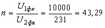
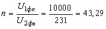
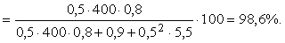

Трехфазный понижающий трансформатор имеет номинальные паспортные данные: S1н = 400 кВ·А; U1н = 10 кВ; U2н = 0,4 кВ; ΔP0 = 0,9 кВт; ΔPк = 5,5 кВт; i0(%) = 2,1; uк(%) = 5; схемы соединения фазных обмоток трансформатора и нагрузки соответственно Δ/Y и Δ; cos φ2 = 0,8; β = 0,5, где β = I2/I2н ≈ I1/I1н - коэффициент нагрузки трансформатора.
Определить:
- номинальные линейные и фазные напряжения и токи обмоток трансформатора;
- параметры электрической схемы замещения приведенного трансформатора и изобразить Т-образную схему замещения фазы А нагруженного трансформатора с указанием на ней всех параметров;
- КПД трансформатора при заданных коэффициентах β и cos φ2.
Рассчитать и построить :
- внешнюю характеристику U2 = f(β) и зависимость КПД от нагрузки, т. е. η = f(β), при cos φ2= 0,8 (инд).
Решение
7. Приведенный к первичной обмотке вторичный ток
 где - коэффициент трансформации.
где - коэффициент трансформации.
8. КПД трансформатора при β = 0,5 и cos φ2 = cos φ2 = 0,8

